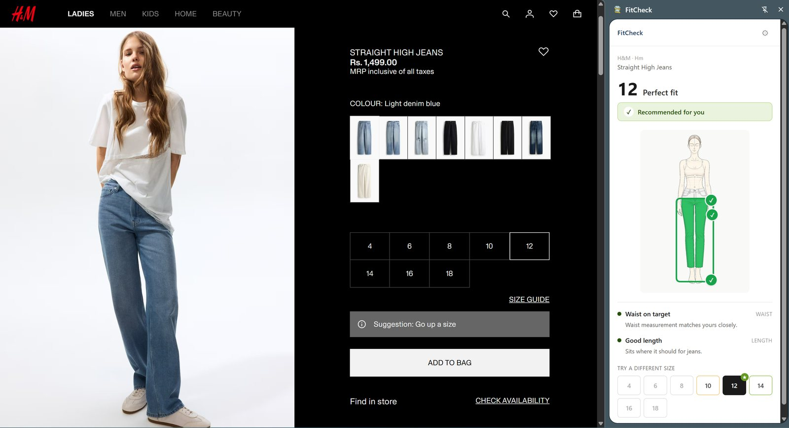
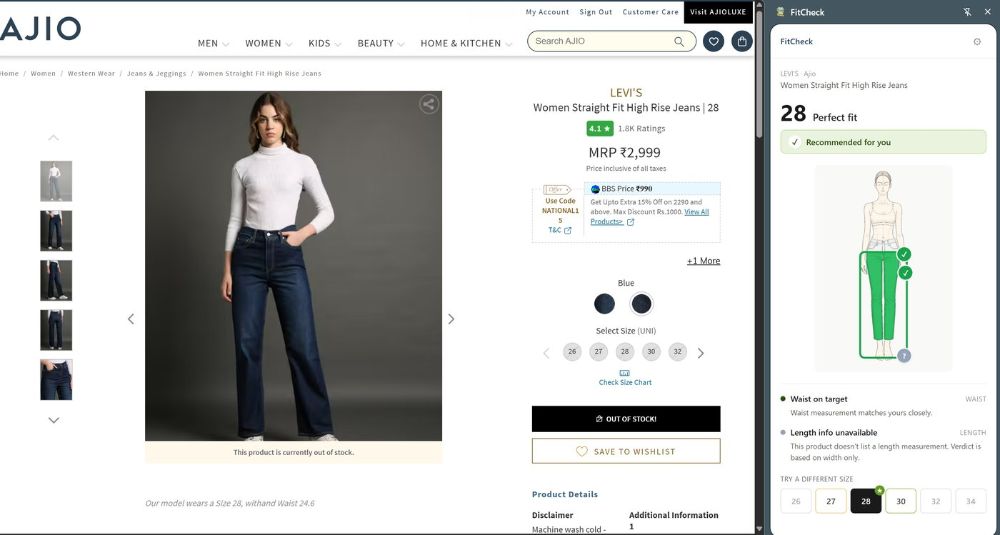
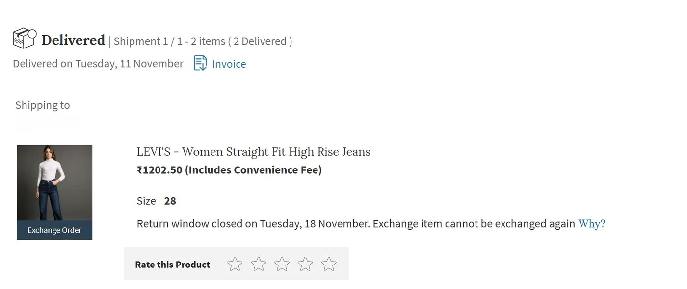

The size chart that is read for you
An afternoon with four tabs open, and the Chrome extension that came out of it.

Four tabs, four different Ms
Myntra, AJIO, H&M and Westside were all running sales at once. I had a tab open on each.
I shop for clothes on a laptop, because a bigger screen shows me more of what I am about to buy. That preference is the only reason I noticed.
Across four tabs, the same letter meant four different bodies. An M on one site was not the M on another. Myntra and AJIO were worse, because they are aggregators: every brand inside them ships its own chart.
I am an XS in some places. An S in most. An M in a few. There is no version of me that is one size.
And every one of those pages already had the chart on it. The information was never missing. It just asked me to do arithmetic across four tabs, in my head, while a sale timer ran.
So the chart was never the problem. Trusting it was.
What I decided not to build
The obvious build is a feature inside one retailer. I had already sketched it for Myntra, and I dropped it. A single-retailer fix cannot solve a problem that only exists between retailers. The difficulty was that four sites disagreed. Fixing one changes nothing.
So: a browser extension, reading whatever page you are on.
That cost me something. Roughly 60% of Indian fashion traffic is on mobile, where an extension cannot reach. I am building for the desktop shopper knowing it is the minority. The extension is the proof, not the product.
I wanted Westside too and could not have it. Its size chart ships only as a PNG image, with no numbers in the page at all, and my adapters are not allowed to make network calls. That is a privacy rule I set early and would not bend for one retailer, so Westside is a documented scope-out instead of a gap.
What it does
You enter your measurements once. On a supported product page, a side panel tells you which size to buy and which parts will be snug, right, or loose.
The part that took longest is the part nobody sees. A size chart can mean two different things: the body a size is cut for, or the garment’s own flat measurement. The gap between them is the designer’s intent. Two inches of ease is slim. Eight is oversized.
Miss that and you get confident nonsense: an oversized tee reading as “too tight” on a body it will actually hang loose on. The engine knows the difference. That is the whole product.
No model, no prediction. The chart is already exact, so arithmetic is the right tool.
What it cost
I ordered Levi’s jeans in size 30. They arrived too loose, so I shipped them back and exchanged for a 28. Both my waist and the label said 30, so the mistake looked impossible. But that cut’s chart puts the body waist for size 28 at 30 inches. The label was misleading; the chart was accurate all along.
FitCheck recommends 28 on that page straight away. One shipment instead of three.


The limits:
- Ten installs. Seven still using it a week later, nobody uninstalled. Recorded by hand in a spreadsheet, because there is no telemetry here. Ten is a signal, and nowhere near a study.
- Six refusals in twenty-one attempts. Nearly one in three. These are not crashes. The engine read those pages fine; the chart was just short a measurement. It says so instead of guessing, because a wrong verdict costs more trust than no verdict. Coverage is a bigger limit here than accuracy.
- Two body blocks, male and female, because retailers organise their charts that way. That underserves anyone those blocks do not describe. A measurements-first model that drops the labels is the next thing I would build.
- Length follows the shelf, not the science. Biomechanics says inseam should scale with height. Retailers do not. Levi’s lists a 32-inch inseam for every waist from 28 to 40. Predicting an ideal nobody stocks would flag jeans as “runs short” that are sold to tall women on purpose.

What would prove me wrong
The metric I want is verdict-to-purchase: of the people shown a recommendation, how many buy that size. It is the number a retailer would pay for, because it maps to fewer size-driven returns. I cannot measure it, because that needs data from inside the retailer and I am outside.
What I can measure is the override rate: how often someone is shown a size and picks a different one. It is the cleanest trust signal there is, and the one most fit tools never instrument. If people override consistently, the verdict is not trusted, and correct arithmetic will not fix that.
Ten installs cannot tell me. That is where this ends: a working engine, a real case where it would have saved a return, and not enough users to know whether it holds.